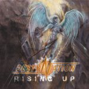

|
|
||
Destynation : Rising Up (2006) |
|

http://www.destynation.com |
1. ShadowGate 4:03 |
8.8/10 |
|
De los restos de la banda sueca Eternia surge un nuevo grupo, llamado Destynation, con vocación de hacer power metal melódico y la difícil tarea de sobresalir en un género tan concurrido. Tras un tenebroso arranque, "Shadowgate" surge con una base rítmica del heavy metal más clásico y la voz melodiosa y brillante de Haggkvist. Un cierto aire de glam metal asoma entre los teclados de la introducción de "Evil Tonight" tema de ritmo lento y coros directos. Las guitarras presentan "Back from the Dark", una canción de power metal algo más potente, con un fantástico y pegadizo estribillo y un llamativo solo de guitarra. El bajo muy marcado en algunas partes sostiene "Freedom", una tema rítmico con otro estribillo muy melodioso, casi hasta resultar empalagoso. Las guitarras marcan una pauta más contundente en "Rising Up", tema al que ni los coros terminan de darle ese escurridizo acabado que lo convertiría en una gran canción. En la fórmula que más se repite en este álbum, el ritmo rápido de "Threshold of Pain" nos lleva hasta un punto álgido melodioso y adornado por coros. Ritmo moderado y pulsante en "The Shadows Remain", con más coros y otro estribillo para recordar. De ritmo tranquilo, "The Tears I Cry" no termina de sobresalir y cede su sitio al doble bombo de "Book of Doom", que tampoco pasa de ser un tema de relleno. "Spirits" mantiene el doble bombo, aunque a ratos, y si bien la melodía es un tanto previsible el estribillo es de nuevo mencionable, aunque hay varios mejores en este disco. Más atractiva resulta la melodía de "Signs", aunque el tema esté más cerca del hard rock que del metal, y el estribillo de nuevo llama la atención. El doble bombo y un bajo destacado ponen los cimientos de "Resign in Flames", con otra original melodía y uno de los mejores estribillos del álbum para cerrarlo. Cercanos a bandas como Supreme Majesty o Dream Evil, con melodías variadas, ritmos rápidos, solos de guitarra metaleros y una voz dulce y con facilidad para los tonos altos, todos los ingredientes del power metal más melódico se mezclan en este álbum. No sólo es difícil sobresalir en este género, sino que es difícil no caer demasiado del lado del hard rock, pero aunque Destynation desde luego no es de los grupos más cañeros que hay ahí fuera, y tienen elementos del hard rock y del glam metal, han construido un disco muy sólido y muy melódico. |
||
- Crítica escrita por Rubén Béjar - |
||